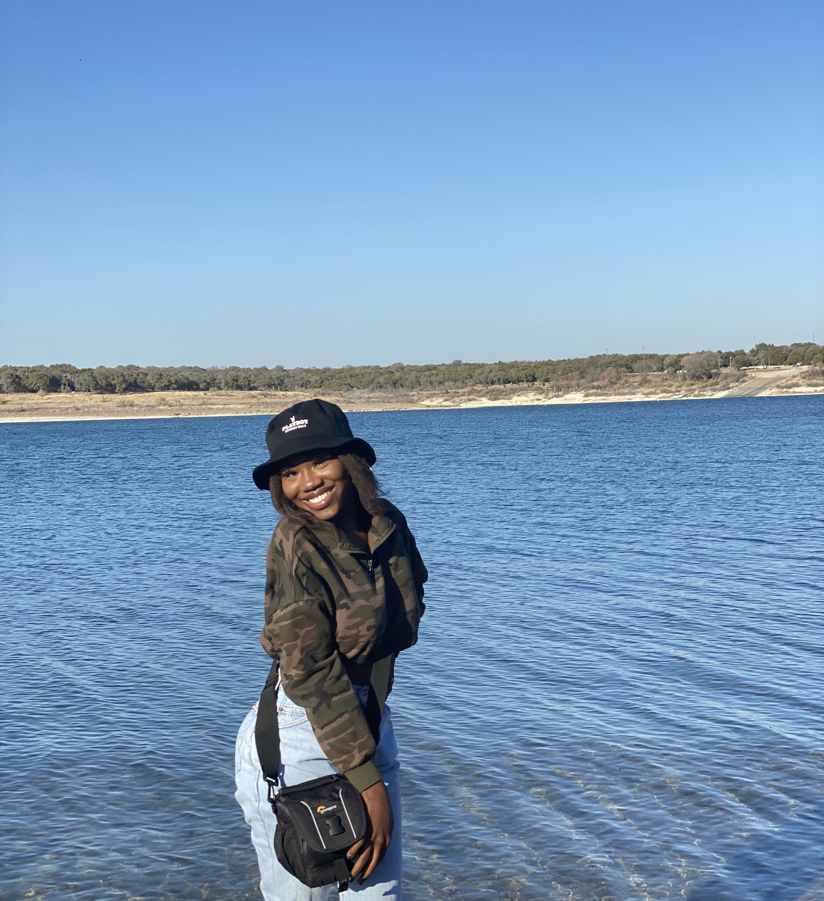
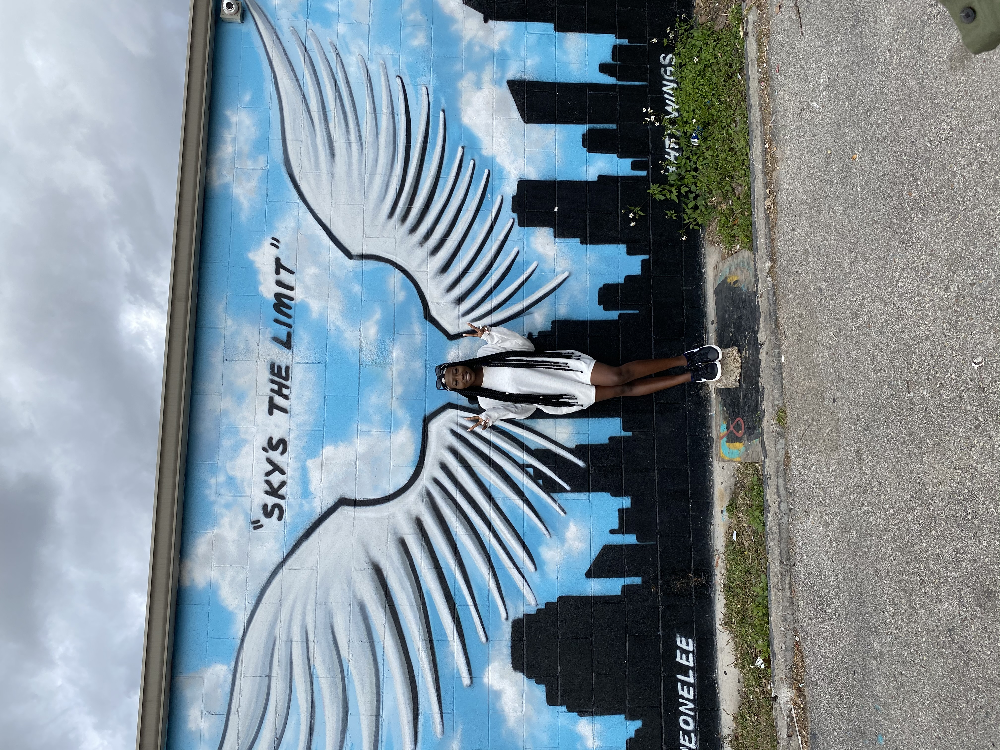
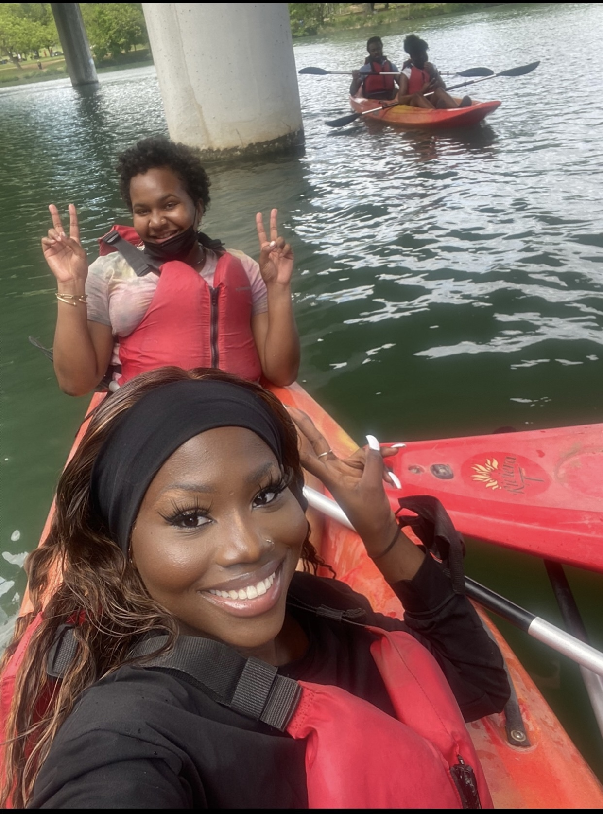

Travelling is my favorite thing to do! I am a very inquisitive person so traveling helps me explore and provide answers to a lot of the unanswered questions I have about the world.
As a 19 year old college student, I have not had the oppotunity to do much exploring but I hope to do a lot of that in the future. I am Nigerian and being from a country
with a beautiful and rich culture makes me value the culture of others as well. I hope to be able to see the beauty of other countries around the world. I also love going on short road
trips to places nearby like Houston and Dallas.
I love to work out; I started going to the gym consistently this year. My friends and family are very important to me so I love to spend time with them. I love to teach people and also learn.
I like to keep myself busy so I am always working on a project. Lastly, I love to binge-watch TV shows!
Feel free to contact me using the links below!


